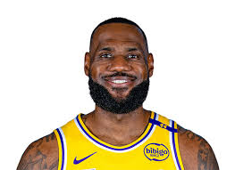
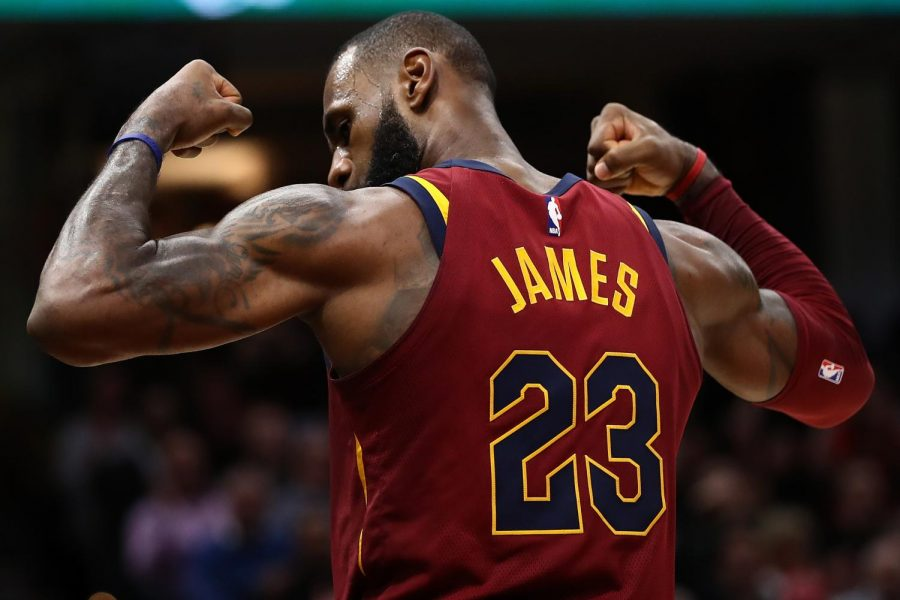

Apelidado de King James, é amplamente reconhecido como um dos maiores jogadores de basquetebol de todos os tempos, ocupando a segunda posição na lista divulgada pela ESPN em 2020, atrás apenas de Michael Jordan. LeBron conquistou quatro títulos da NBA, quatro prêmios de MVP da NBA e quatro prêmios de MVP de Finais da NBA, além de três medalhas de ouro olímpicas com a Seleção Norte-Americana.
LeBron é o maior pontuador e o quarto jogador com mais assistências na história da NBA
LeBron jogou no ensino médio por St. Vincent - St. Mary, escola de sua cidade natal Akron, Ohio. LeBron conquistou dois prêmios de Melhor Jogador do Ensino Médio Americano em 2002 e 2003, que o promoveu altamente na mídia nacional como um futuro astro da NBA. LeBron foi selecionado na primeira escolha do Draft da NBA de 2003 pela equipe do seu estado natal, o Cleveland Cavaliers, à frente de jogadores como Carmelo Anthony, Chris Bosh e Dwyane Wade.
Na sua primeira temporada em 2004, ele venceu o prêmio de Revelação da NBA. Em 2007, LeBron liderou os Cavaliers que possuía um elenco limitado a uma inédita final da NBA, perdida para o San Antonio Spurs por 4–0. Nos anos de 2009 e 2010, ele foi nomeado o MVP da NBA, após liderar os Cavaliers há duas temporadas consecutivas com mais de 60 vitórias.
Com 2,06 m de altura e pesando 113,4 kg, James foi considerado como o jogador de melhor espécime física dentre todos os desportos por alguns analistas desportivos. Sua versatilidade, permite que James tenha a capacidade de jogar em todas as posições, sendo um dos poucos jogadores na história da NBA que lideraram a liga em pontos e assistências.
James pediu em casamento Savannah Brinson, sua namorada dos tempos de escola, em 31 de dezembro de 2011, em uma festa de comemoração de Ano Novo e de seu aniversário de 27 anos. Os dois se casaram em 14 de setembro de 2013 em San Diego. Juntos, eles têm três filhos, os meninos, LeBron James Jr. e Bryce Maximus James, e a pequena Zhuri James.
No ano de 2024, Lebron James junto com duas estrelas do basqueteball americano Kevin Durant e Stephen Curry ganhou ouro no basqueteball sem perder uma partida, permanecendo invictos nas olimpíadas em Paris
Visite o site da Wikipédia para mais informações
clique aqui e veja nossas fotos
clique aqui e veja outros jogadores